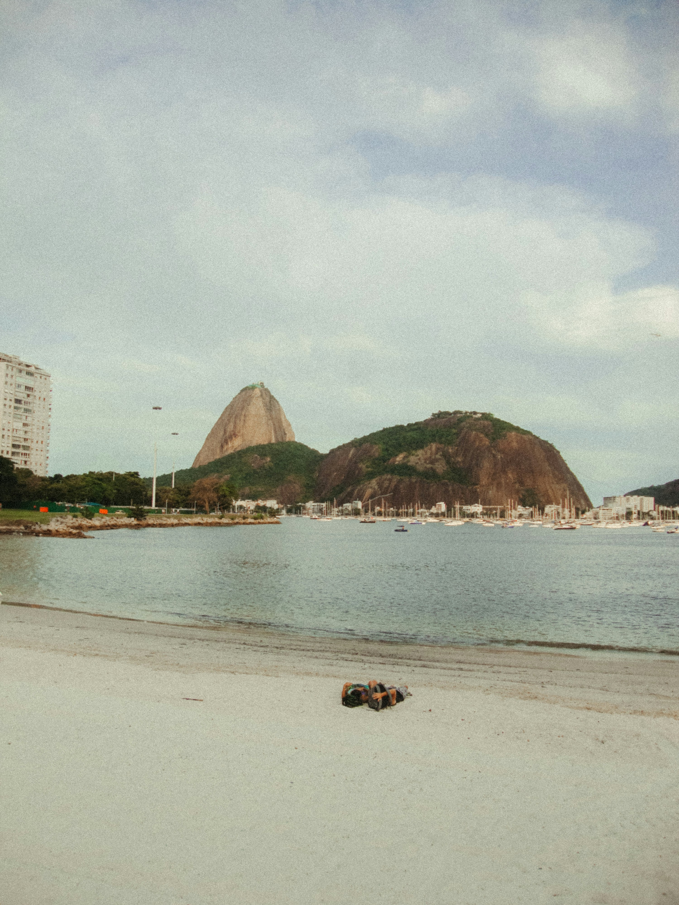

Icons, beaches & nightlife
Rio de Janeiro
Rio combines dramatic scenery, famous beaches, nightlife and some of the most recognisable landmarks in Brasil.
- Best for: First time visitors, nightlife and iconic sights
- Atmosphere: Energetic and social
- Suggested stay: 4-6 days